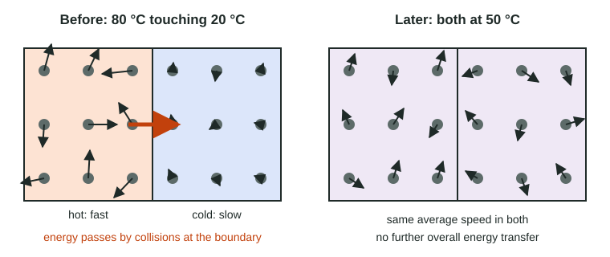

Heat Transfer and Thermal Equilibrium
When objects at different temperatures touch, collisions pass energy from the faster particles of the hotter object to the slower particles of the cooler one.
Part 1 · Hook
Why this matters
Part 2 · Before you start
What this builds on
Part 3 · Prerequisite check
Quick check before you start
1. Temperature is a measure of the particles'
- average kinetic energy
- total mass
- number of bonds
- size
Show the answer
Higher temperature means the particles move faster on average.
- Correct: average kinetic energy:
- total mass:
- number of bonds:
- size:
2. In an exothermic process, the surroundings
- warm up
- cool down
- do not change
- lose mass
Show the answer
Energy leaves the system and enters the surroundings, so they warm.
- Correct: warm up:
- cool down:
- do not change:
- lose mass:
Part 4 · See it
See it first

Part 5 · Step by step
How it works, step by step
- Two objects at different temperatures touchparticles at the boundary collide, the faster ones from the hot object with the slower ones from the cold object
- In those collisions, faster particles usually lose energy and slower ones gain itenergy flows from the hotter object to the cooler one
- The hot object loses energy and the cold one gains ittheir temperatures move toward each other
- The temperatures become equalenergy passes equally both ways, so there is no net flow: thermal equilibrium
- Energy is conserved in an isolated systemenergy lost by the hot object equals energy gained by the cold one
Part 6 · Key ideas
Key ideas
- Heat is energy transferred because of a temperature difference; it always flows from warmer to cooler.
- At the particle level, heat transfer happens by collisions: fast particles speed up slow ones.
- Thermal equilibrium: equal temperatures, no net energy flow, though collisions continue.
- In an insulated (isolated) system, energy lost by one object = energy gained by the other.
- The final temperature lies between the starting temperatures.
Part 7 · Misconception
A common mistake
The wrong idea: Ice cools a drink by giving it cold.
What actually happens: Cold is not a thing that moves. The drink cools because energy flows out of it into the colder ice.
Part 8 · Check yourself
Check yourself
Exam-style questions. Anything you miss goes into your review queue.
Graph
A hot metal block in cool water
A 120 g aluminum block is heated to 95.0 °C and placed in 200.0 g of water at 21.0 °C in an insulated container. Probes record the temperature of the block and of the water.
Aluminum blockWater
Data table
| Time (s) | Aluminum block | Water |
|---|---|---|
| 0 | 95 | 21 |
| 30 | 48.2 | 27 |
| 60 | 34.8 | 28.8 |
| 90 | 31 | 29.2 |
| 120 | 29.9 | 29.4 |
| 180 | 29.5 | 29.4 |
| 240 | 29.4 | 29.4 |
| 300 | 29.4 | 29.4 |
1. At what time do the block and the water first reach thermal equilibrium?
- At about 240 s, when both read 29.4 °C
- At 0 s, when the block is placed in the water
- At about 90 s, when the block's temperature stops falling quickly
- At about 120 s, when the water reaches 29.4 °C
Show the answer
Thermal equilibrium means equal temperatures, so no net energy flows. Both read 29.4 °C from 240 s onward.
- Correct: At about 240 s, when both read 29.4 °C: Right: from 240 s on, both curves are flat at the same temperature.
- At 0 s, when the block is placed in the water: At 0 s the temperatures differ by 74 °C, so energy is flowing fast.
- At about 90 s, when the block's temperature stops falling quickly: At 90 s the block is still 1.8 °C warmer than the water, so energy still flows.
- At about 120 s, when the water reaches 29.4 °C: At 120 s the block (29.9 °C) is still warmer than the water (29.4 °C).
2. Why does the block's temperature fall fastest in the first 30 s?
- The water is coldest then, so it releases cold into the block fastest.
- The temperature difference is largest then, so energy moves from block to water fastest.
- The block holds the most thermal energy at the start, so it gives most of it away in the first seconds.
- The block is still being heated during the first 30 s.
Show the answer
Energy transfer is fastest when the temperature difference is largest, here at the start (74.0 °C apart at 0 s); it slows as the temperatures approach each other.
- The water is coldest then, so it releases cold into the block fastest.: Cold does not flow. Energy flows from the block to the water.
- Correct: The temperature difference is largest then, so energy moves from block to water fastest.: Right: the larger the gap, the larger the difference in particle speeds at the boundary and the faster energy moves.
- The block holds the most thermal energy at the start, so it gives most of it away in the first seconds.: The rate depends on the temperature difference between the two objects, not on the block alone.
- The block is still being heated during the first 30 s.: The block was removed from the heat at 0 s; its temperature only falls.
3. The block's temperature drops by 65.6 °C, while the water's rises by only 8.4 °C. Which statement explains this, assuming no energy leaves the container?
- The block loses much more energy than the water gains, since its temperature changes more.
- The water gains energy from the container, so it needs less from the block.
- The block loses exactly the energy the water gains, but that energy changes the water's temperature less.
- Some of the block's energy is destroyed as it cools, so the water gains less.
Show the answer
Energy is conserved: q(lost by block) = q(gained by water). A temperature change depends on the energy and on what absorbs it; the same energy warms 200 g of water by far fewer degrees than it cools 120 g of aluminum.
- The block loses much more energy than the water gains, since its temperature changes more.: In an insulated container, energy lost by the block equals energy gained by the water.
- The water gains energy from the container, so it needs less from the block.: The container is insulated; the water's energy came from the block.
- Correct: The block loses exactly the energy the water gains, but that energy changes the water's temperature less.: Right: equal energy, different temperature changes. The 200 g of water needs far more energy per degree than the 120 g block does.
- Some of the block's energy is destroyed as it cools, so the water gains less.: Energy is conserved: it moves but is not destroyed.
4. Later calculations show that the block lost 7.06 kJ of energy between 0 s and 300 s. How much energy, in kJ, did the water gain, if no energy left the container?
Type a number and its unit.
Show the answer
Energy is conserved in an insulated container: energy gained by the water = energy lost by the block = 7.06 kJ.
- Answer: 7.06 kJ
5. A spoon at 22 °C is put into a cup of tea at 80 °C. Which describes what happens?
- Energy flows from the tea to the spoon until both reach the same temperature.
- Cold flows from the spoon into the tea until both reach the same temperature.
- Energy flows from the spoon to the tea until the spoon reaches 80 °C.
- No energy flows, because a metal and a liquid do not exchange energy.
Show the answer
Energy moves by collisions from the hotter tea to the cooler spoon. The spoon warms, the tea cools a little, and both end at one temperature between 22 °C and 80 °C.
- Correct: Energy flows from the tea to the spoon until both reach the same temperature.: Right: energy flows from the warmer object to the cooler one until thermal equilibrium.
- Cold flows from the spoon into the tea until both reach the same temperature.: Only energy moves; the tea cools because it loses energy to the spoon.
- Energy flows from the spoon to the tea until the spoon reaches 80 °C.: Energy flows from hot to cold, and the final temperature is between 22 °C and 80 °C.
- No energy flows, because a metal and a liquid do not exchange energy.: Any two objects in contact at different temperatures exchange energy.
6. In an insulated cup, 100 g of water at 60 °C is mixed with 100 g of water at 20 °C. What is the final temperature?
- 40 °C
- 80 °C
- 20 °C
- 60 °C
Show the answer
Energy lost by the hot water equals energy gained by the cold water. With equal masses of the same substance, each changes by the same number of degrees, 20 °C, to meet at 40 °C.
- Correct: 40 °C: Right: equal masses of the same substance, so the hot water loses as many degrees as the cold water gains: 60 − 20 = 40, split evenly.
- 80 °C: Temperatures do not add. Energy flows from the hot water to the cold water until they meet in between.
- 20 °C: The cold water cannot stay at 20 °C while energy flows into it.
- 60 °C: The hot water loses energy, so it cannot stay at 60 °C.
7. A hot iron nail and a cool block of the same mass of iron are placed in contact in an insulated box. Which final temperature is possible if the nail started at 90 °C and the block at 30 °C?
- 30 °C
- 60 °C
- 90 °C
- 25 °C
Show the answer
The final temperature lies between the two starting temperatures. With equal masses of the same material it is the average, (90 + 30) / 2 = 60 °C.
- 30 °C: The block receives energy, so it must warm above 30 °C.
- Correct: 60 °C: Right: same substance, same mass, so the hot one drops as much as the cold one rises, meeting halfway.
- 90 °C: The nail loses energy, so it must cool below 90 °C.
- 25 °C: A final temperature below both starting values would need energy to leave the insulated box.
Part 9 · Summary
Summary
Part 10 · Up next
What comes next
Part 11 · Connections